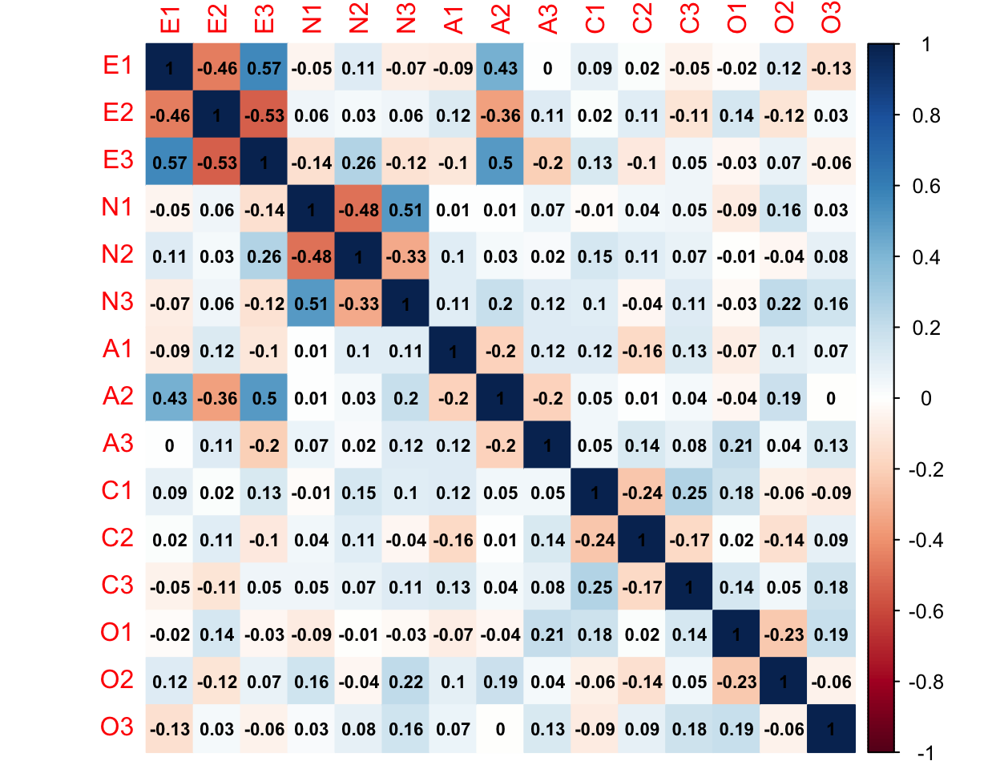
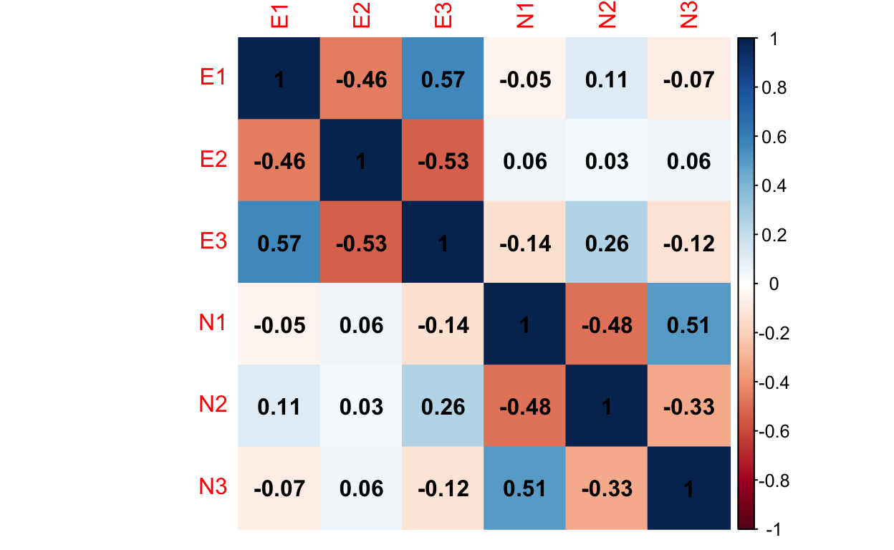
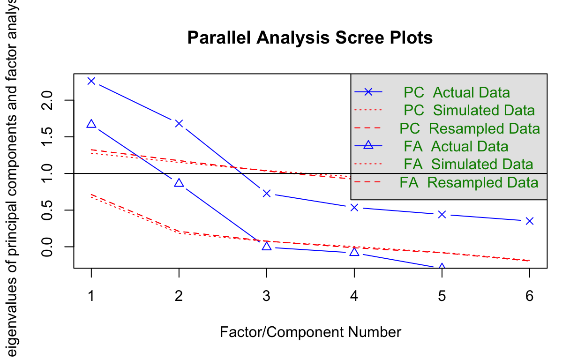
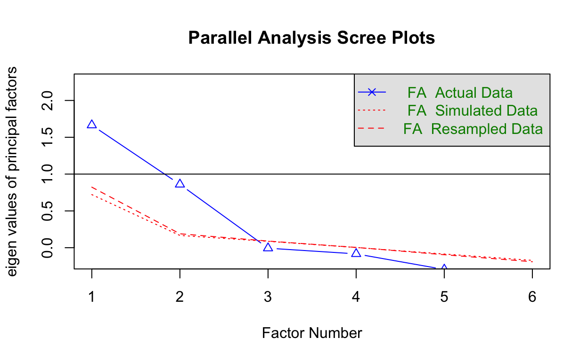
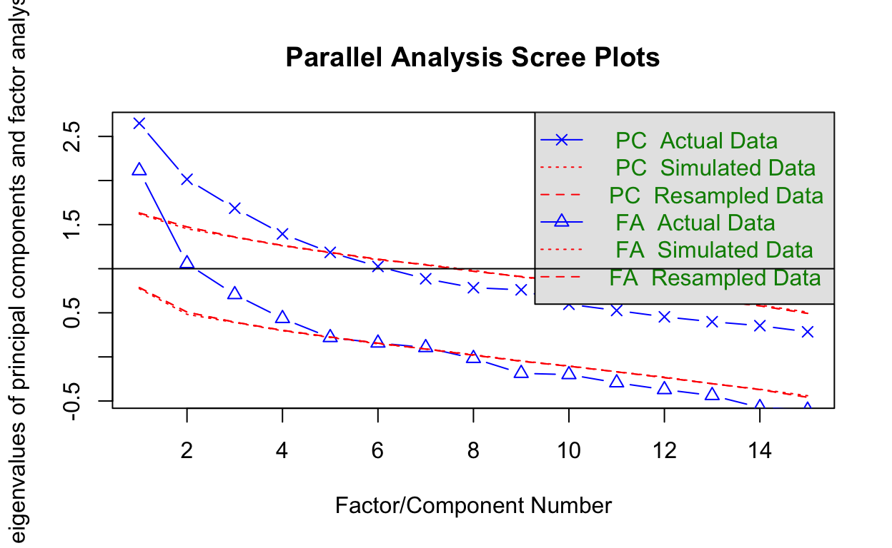
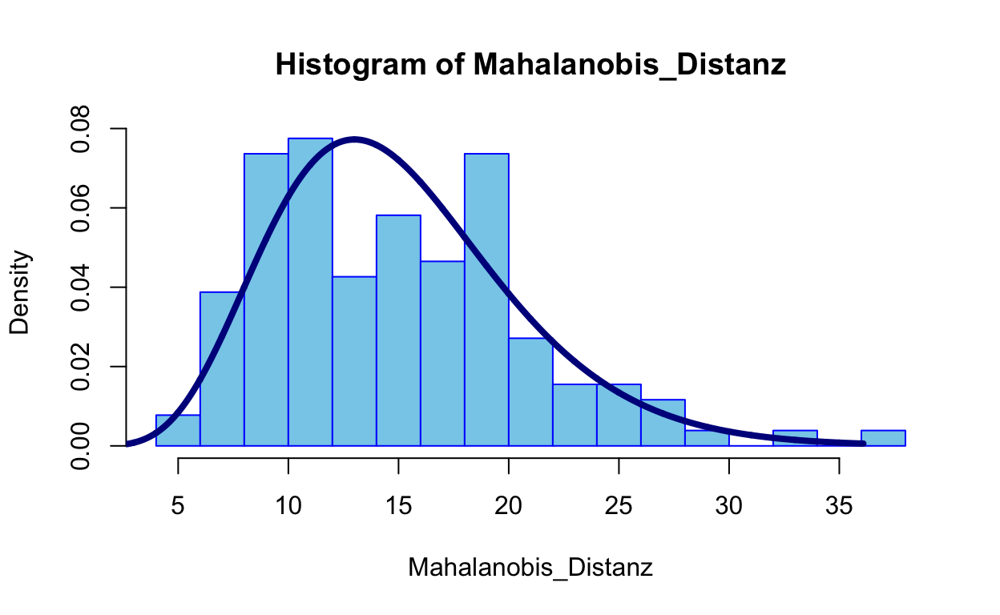

Forschungsmethoden und Evaluation II, PsyMSc 1, Sommersemester 2020 — EFA
Forscher der Psychologie oder anderer Natur-, Sozial- und Geisteswissenschaften interessieren sich häufig dafür, dass sich Daten runterbrechen lassen auf einige wenige entscheidende Faktoren, welche ein theoretisches Erklärungsmodell für die Variation in einem Datensatz liefern. Die Annahme ist hierbei, dass die beobachtbaren Messungen eine Linearkombination (also eine Summe) aus einem systematischen (wahren) und einem unsystematischen (Fehler-) Anteil bilden. Die dahinterliegenden Faktoren sind nicht messbare (latente) Variablen, auf welche, unter gewissen Annahmen, nur anhand der Kovariation zwischen den beobachtbaren Item geschlossen werden kann. Durch diese Zusammenhänge zwischen den Messungen können schließlich Hypothesen für die latenten Varibalen untersucht werden. Ein theoriegenerierendes Verfahren, das hierzu häufig verwendet wird, ist die exploratorische Faktorenanalyse (EFA). Wir wollen dieses Verfahren zur Auswertung von Beziehungen zwischen Variablen in R näher kennenlernen.
Bevor wir mit den Analysen beginnen können, laden wir zunächst alle Pakete, welche wir im Folgenden benötigen werden.
library(corrplot) # Korrelationsmatrix grafisch darstellen
library(psych) # EFA durchführen
library(GPArotation) # EFA Lösung rotierenWir wollen uns die Faktorenstruktur der Big-5 eines entsprechenden Fragebogens ansehen. Der Originaldatensatz ist ein Onlinedatensatz, wird seit 2012 erfasst und ist hier als .zip downloadbar. Bisher haben über 19700 Probanden aus der ganzen Welt teilgenommen. Zu jeder der fünf Facetten gibt es 10 Fragen. Der Fragebogen ist hier einzusehen. Um das Ganze etwas übersichtlicher zu gestalten, betrachten wir einen gekürzten Datensatz. Im Datensatz Big5.rda befinden sich 15 Items aus dem Big-5 Persönlichkeits Fragebogen. Hier werden von diesen 10 Items jeweils die ersten drei verwendet. Der Itemwortlaut der verwendeten Items ist
| Itemwortlaut | |
| Item Nr. | Item |
|---|---|
| E1 | I am the life of the party. |
| E2 | I don’t talk a lot. |
| E3 | I feel comfortable around people. |
| N1 | I get stressed out easily. |
| N2 | I am relaxed most of the time. |
| N3 | I worry about things. |
| A1 | I feel little concern for others. |
| A2 | I am interested in people. |
| A3 | I insult people. |
| C1 | I am always prepared. |
| C2 | I leave my belongings around. |
| C3 | I pay attention to details. |
| O1 | I have a rich vocabulary. |
| O2 | I have difficulty understanding abstract ideas. |
| O3 | I have a vivid imagination. |
Die Kürzung des vollen Datensatzes lässt sich hier nachvollziehen:
data_full <- read.table("BIG5/data.csv", header = T, sep = "\t") # nach entpacken des .zip liegen die Daten in einem Ordner namens Big5
### Entferne leere Zeilen und Zeilen mit Missings aus dem Datensatz
ind <- apply(data_full, 1, FUN = function(x) any(is.na(x))) # erzeuge eine Variable, welche TRUE ist, wenn mindestens ein Eintrag pro Zeile fehlt und ansonsten FALSE anzeigt
data_full <- data_full[!ind, ] # Wähle nur diejenigen Zeilen, in denen unsere Indikatorvariable "ind" NICHT TRUE anzeigt, also wo alle Einträge vorhanden sind
# !ind (Ausrufezeichen vor ind) negiert die Einträge in ind (Prüfe bspw. !FALSE == TRUE, nicht false ist gleich true)
### Shorten Data Set
Big5 <- data_full[, c(2:4,7,7+rep(1:3,5)+sort(rep(seq(0,40,10),3)))]
# Verwende nur 3 Items pro Skala plus einige demografische Items
Big5 <- data.frame(Big5) # Schreibe Datensatz als data.frame
save(list = c("Big5"), file = "Big5.rda")
# Speichere gekürzten Datensatz in .rda file (dem R-internen Datenformat)
## --> Das ist auch der Datensatz, den wir weiter verwenden werden!Zusätzlich zu den Persönlichkeitsitems wurden demografische Daten, die mögliche Unterschiede zwischen Personen beschreiben, erfasst.
# Datensatz laden
load("Big5.rda") # shortend Big 5 Questionnaire Data Set
head(Big5, n = 10) # gebe die ersten 10 Zeilen ausWir sehen, dass in den ersten 4 Spalten die demografischen Daten wie etwa Alter (“age”), Englisch als Muttersprache (“engant”, 1=yes, 2=no, 0=missed), Geschlecht (“gender”, 1=Male, 2=Female, 3=Other, 0=missed) und Herkunftsland (“country”, ISO-kodiert, bspw. “DE” = Deutschland, “FR” = Frankreich, “EM” = Vereinigte Arabische Emirate, “US” = Vereinigten Staaten von Amerika) eingetragen wurden. In den darauf folgenden Spalten sind die Items der Extraversion (engl. extraversion, Items:E1, E2, E3), des Neurotizismus (engl. neuroticism, Items: N1, N2, N3), der Verträglichkeit (engl. agreeableness, Items: A1, A2, A3), der Gewissenhaftigkeit (engl. conscientiousness, Items: C1, C2, C3) und der Offenheit für Erfahrungen (engl. openness, Items: O1, O2, O3) eingetragen. Beispielsweise ist die erste Person des Datensatzes ein 53-jähriger Mann, der Englisch als Muttersprache spricht und in den USA lebt.
Da wir uns in der Praxis nur sehr selten in der glücklichen Lage befinden, einen solch riesigen Datensatz zu haben, wollen wir uns innerhalb des Datensatzes auf Subgruppen beschränken: wir wollen uns zunächst nur Daten von Personen aus Frankreich ansehen. Dazu wählen wir nur diejenigen Spalten aus, in denen country == "FR" gilt. Das erreichen wir wie folgt:
data_France <- Big5[Big5$country == "FR", ]
dim(data_France)## [1] 129 19Mit Big5$country haben wir Zugriff auf die “Country”-Spalte im Datensatz und können mit == FR prüfen, an welchen Stellen hier “FR” steht, also Personen, die in Frankreich leben. dim gibt die Dimensionen des Datensatzes wieder. dim_France enthält also 129 Zeilen (also Probanden, die in Frankreich leben) und 19 Spalten (also Variablen). Für die weiteren Analysen brauchen wir die demografischen Variablen in dem Datensatz der in Frankreich lebenden Teilnehmer nicht mehr. Aus diesem Grund speichern wir den Datensatz noch einmal ohne die ersten 4 Spalten ab.
dataFR <- data_France[, -c(1:4)] # entferne demografische Daten und speichere als "dataFR"
#### Visualisierte Korrelationsmatrix in dataFR
corrplot(corr = cor(dataFR), # Korrelationsmatrix (Datengrundlage)
method = "color", # Zeichne die Ausprägung der Korrelation farblich kodiert
addCoef.col = "black", # schreibe die Korrelationskoeffizienten in schwarz in die Grafik
number.cex = 0.7) # Stelle die Schriftgröße der Koeffizienten ein
Auf den ersten Blick scheinen die Items der gleichen Skala stärker (betragsmäßig höher) miteinander zu korrelieren. Allerdings sind hier sehr viele Korrelationen abgetragen. Wir wollen uns zunächst nur auf Extraversion und Neurotizismus beschränken.
dataFR2 <- dataFR[,1:6] # Zunächst wählen wir 6 Items
head(dataFR2)# Visualisierte Korrelationsmatrix
corrplot(corr = cor(dataFR2), # Korrelationsmatrix (Datengrundlage)
method = "color", # Zeichne die Ausprägung der Korrelation farblich kodiert
addCoef.col = "black", # schreibe die Korrelationskoeffizienten in schwarz in die Grafik
number.cex = 1) # Stelle die Schriftgröße der Koeffizienten ein
Hier ist nun deutlich zu sehen, dass die Extraversionsitems und die Neurotizismusitems untereinander jeweils stärker zusammenhängen als zwischen den Konstrukten. Dennoch ist der Grafik zu entnehmen, dass die beiden Konstrukte nicht unabhängig voneinander sind (es gibt Beziehungen zwischen Items der beiden Konstrukte).
Unser Ziel ist es, mit den gegebenen Items eine exploratorische Faktorenanalyse durchzuführen. Wir wollen hierbei die Anzahl der Faktoren mittels einer Parallelanalyse bestimmen und anschließend dieses Modell mit dem \(\chi^2\)-Test (Likelihood-Quotiententest/ Likelihood-Differenzentest/ \(\chi^2\)-Differenzentest) gegen konkurrierende Modelle vergleichen. Hierbei wollen wir die oblique rotierte und die orthogonal rotierte Lösung vergleichen und hinsichtlich unserer Daten interpretieren. Das Modell, was wir an unsere Daten anpassen wollen, sieht für 6 Variablen (\(V_1,\dots,V_6\)) im Allgemeinen erst einmal so aus:

Auf unseren Datensatz angepasst, wollen wir folgendes Modell anpassen.

Natürlich erwarten wir, dass insgesamt 2 Faktoren die Daten am besten beschreiben und dass die konstruktkongruenten Items jeweils auf dem gleichen Faktor am stärksten laden. Aber stützen die Daten diese Hypothese?
Wir wollen im Folgenden
Zur Auswahl der Anzahl an Faktoren in der EFA kann auf die Eigenwerte zurückgegriffen werden. Diese Eigenwerte entstehen beispielsweise durch Lösen des Eigenwerteproblems und entsprechen den Varianzen der Faktoren. Hier gilt es nur solche Faktoren zu wählen, die auch große Varianzen haben. Die Parallelanalyse hatten wir im Zusammenhang mit der Hauptkomponentenanalyse (PCA, principal component analysis) kennengelernt. Hier werden vielfach (z.B. 1000 Mal) unabhängige Daten in dem gleichen Format des ursprünglichen Datensatzes gezogen und eine PCA oder EFA durchgeführt. Die entstehenden Eigenwerte werden der Größe nach erfasst und dann über die Wiederholungen gemittelt. So entsteht ein auf die Stichprobe und Anzahl der Variablen genormter, zufälliger Eigenwerteverlauf. Sind Eigenwerte der tatsächlich beobachteten Daten größer als die der Parallelanalyse, so spricht dies für eine/n bedeutsame/n Komponente/Faktor. Weitere Kriterien zur Auswahl von zu extrahierenden Faktoren im Rahmen der PCA waren das Eigenwerte-größer-1 Kriterium (Kaiser-Guttman-Kriterium) sowie der Scree-Test (Ellbow-Criterion, Knick im Eigenwerteverlauf). Weitere Informationen zur EFA sowie zu Wiederholungen der PCA und der Auswahlkriterien können beispielsweise in Eid, Gollwitzer und Schmitt (2017) in Kapitel 25 (Seite 919 und folgend) nachgelesen werden.
Der wesentliche Unterschied zwischen einer EFA und einer PCA ist, dass in der EFA angenommen wird, dass die beobachteten Variablen systematische (wahre) und unsystematische (Fehler-) Anteile enthalten. Es wird somit ein Erklärungsmodell, welches die Variation zwischen den Variablen erzeugt, postuliert. Bei der PCA werden die beobachteten Variablen als messfehlerfrei angenommen. Eine wichtige Folge aus der Modellierung der Fehler ist, dass in der Regel die Faktorladungen bei der PCA höher ausfallen als bei der EFA. Dies liegt daran, dass bei der PCA die Variablen mit ihren eigenen Messfehlern, aus welchen auch die Hauptkomponenten unter anderem zusammengesetzt sind, korrelieren. Die Faktorladungen/Komponentenladungen stehen hierbei (im orthogonalen Fall) für die Korrelation zwischen Item und Faktor/Komponente. Wird eine ML-EFA an die Daten angepasst, so wird zusätzlich noch ein Erklärungsmodell basierend auf Verteilungsannahmen (multivariate Normalverteilung der Items, Faktoren und Fehler) herangezogen. Bei der PCA sind die Hauptkomponenten lediglich Linearkombinationen aus den beobachteten Variablen ohne jegliche Verteilungsannahmen (die Hauptkomponenten bestehen aus gewichteten Summen der beobachteten Variablen).
Mit Hilfe des fa.parallel Befehls aus dem psych-Paket, welchen wir im Rahmen der PCA bereits kennengelernt hatten, lässt sich ganz einfach der Eigenwerteverlauf inklusive Parallelanalyse grafisch darstellen.
fa.parallel(dataFR2)
## Parallel analysis suggests that the number of factors = 2 and the number of components = 2Ohne weitere Einstellungen wird der Eigenwerteverlauf der PCA und der EFA ausgegeben. Deutlich zu sehen ist, dass die Eigenwerte der PCA größer ausfallen als die der EFA. Dies liegt erneut daran, dass die Faktoren der EFA lediglich die systematischen Anteile der Variablen enthalten, während die Komponenten der PCA Kompositionen sind - also Zusammensetzungen aus den Variablen; inklusive der Messfehler.
fa.parallel(dataFR2, fa = "fa")
## Parallel analysis suggests that the number of factors = 2 and the number of components = NADie Grafik zeigt drei Eigenwerteverläufe. FA Actual Data ist der Eigenwerteverlauf unseres Datensatzes. FA Simulated Data ist der Eigenwerteverlauf basierend auf den 1000 simulierten Datensätzen. FA Resampled Data ist der Eigenwerteverlauf von Datensätzen, der durch Resampling, also neues Verteilen unseres Datensatzes entsteht. Da beim Resampling die Systematiken unseres Datensatzes verloren gehen, sollte das Resampling einen ähnlichen Eigenwerteverlauf wie die unabhängig gezogenen Datensätze zeigen.
Der Parallelanalyse der EFA ist zu entnehmen, dass voraussichtlich 2 Faktoren genügen, um die Variation im Datensatz zu erklären. Auch die Parallelanalyse der PCA (Grafik zuvor) lässt dies vermuten. Des Weiteren sprechen beide Scree-Tests für einen Knick um den 3. Faktor/die 3. Komponente, was auch für eine Dimensionalität von 2 spricht. Zu guter Letzt zeigt auch das Kaiser-Guttman-Kriterium kein anderes Ergebnis. Allerdings ist dieses Kriterium nur sinnvoll auf den Eigenwerteverlauf der PCA anwendbar, weswegen wir es auch nur im Bezug auf den PCA-Eigenwerteverlauf interpretieren.
Da unsere Auswahlkriterien einstimmig für 2 Faktoren sprechen und dies auch unsere Hypothese war, modellieren wir zunächst eine orthogonale Hauptachsenanalyse. Dazu nutzen wir den fa (Factor Analysis) Befehl des psych Paketes. Mit Hilfe der Argumente nfactors und rotate lässt sich die Anzahl an Faktoren sowie die Rotation auswählen. Wir wollen hier orthogonal varianzmaximierend (also varimax) rotieren.
fa(dataFR2, nfactors = 2, rotate = "varimax")## Factor Analysis using method = minres
## Call: fa(r = dataFR2, nfactors = 2, rotate = "varimax")
## Standardized loadings (pattern matrix) based upon correlation matrix
## MR1 MR2 h2 u2 com
## E1 0.69 -0.06 0.48 0.52 1.0
## E2 -0.65 0.00 0.42 0.58 1.0
## E3 0.82 -0.19 0.70 0.30 1.1
## N1 -0.01 0.84 0.70 0.30 1.0
## N2 0.10 -0.58 0.35 0.65 1.1
## N3 -0.05 0.59 0.34 0.66 1.0
##
## MR1 MR2
## SS loadings 1.58 1.42
## Proportion Var 0.26 0.24
## Cumulative Var 0.26 0.50
## Proportion Explained 0.53 0.47
## Cumulative Proportion 0.53 1.00
##
## Mean item complexity = 1
## Test of the hypothesis that 2 factors are sufficient.
##
## The degrees of freedom for the null model are 15 and the objective function was 1.47 with Chi Square of 183.82
## The degrees of freedom for the model are 4 and the objective function was 0.07
##
## The root mean square of the residuals (RMSR) is 0.04
## The df corrected root mean square of the residuals is 0.07
##
## The harmonic number of observations is 129 with the empirical chi square 4.98 with prob < 0.29
## The total number of observations was 129 with Likelihood Chi Square = 9.06 with prob < 0.06
##
## Tucker Lewis Index of factoring reliability = 0.886
## RMSEA index = 0.102 and the 90 % confidence intervals are 0 0.187
## BIC = -10.38
## Fit based upon off diagonal values = 0.99
## Measures of factor score adequacy
## MR1 MR2
## Correlation of (regression) scores with factors 0.89 0.88
## Multiple R square of scores with factors 0.79 0.77
## Minimum correlation of possible factor scores 0.58 0.55Im Output ganz oben erkennen wir die Schätzmethode (hier: minres, also Minimierung der Residuen). Aus diesem Grund heißen die Faktoren in diesem Output auch MR1 und MR2; für Minimale-Residuen-Faktor 1 und 2. Die Faktorladungen zu den zugehörigen Faktoren sind unter Standardized loadings (pattern matrix) based upon correlation matrix zu sehen. h2 steht für die Kommunalität (\(h^2\)), also den Anteil an systematischer Variation, die auf die 2 Faktoren zurückzuführen ist (diese kann ähnlich der Reliabilität interpretiert werden). u2 ist die “uniqueness” (\(u^2\)), also der unerklärte Anteil. Offensichtlich gilt \(u^2 = 1-h^2\) oder \(h^2 + u^2 = 1\). Unter den Faktorladungen erhalten wir Informationen über die Faktoren. SS loadings steht für “Sum of Squares loadings”, also die Quadratsumme der Faktorladungen. Diese ist gleich dem Eigenwert: \(\theta_j = \Sigma_{i=1}^p\lambda_{ij}^2 = \lambda_{1j}^2+\dots+\lambda_{pj}^2\) (Spaltenquadratsumme der Faktorladungen), mit \(p=\) Anzahl an Variablen (hier \(p=6\)). Proportion Var betitelt den Anteil der Variation, der durch die jeweiligen Faktoren erklärt werden kann. Cumulative Var kummuliert, also summiert, diese Anteile auf. Proportion Explained setzt die Variation, die durch die Faktoren erklärt wird, in Relation zur gesamten erklärten Varianz (d.h. hier summiert sich die erklärte Varianz immer zu 1, während die sich proportionale Varianz nur zu 1 aufsummiert, wenn die gesamte Variation im Datensatz auf die beiden Variablen zurückzuführen ist). Cumulative Proportion beschreibt das gleiche wie Cumulative Var, nur wird sich hier auf die Proportion Explained bezogen. Bei der Interpretation dieser Kennwerte ist jedoch zu bedenken, dass bei der EFA angenommen wird, dass die beobachteten Variablen Messfehler enthalten (also die Reliabilität nicht als 1 angenommen werden kann). Folglich ist die Kommunalität \(h^2\) nicht 1 und wir können nicht unbedingt davon ausgehen, dass die Faktoren die gesamte Variation der Daten erklären.
Da durch diesen Befehl sehr viele Informationen ausgegeben werden, speichern wir uns diese Analyse als ein Objekt ab, welchem wir dann gezielt Informationen mit Hilfe von ...$... entlocken können. Welche Argumente entlockt werden können, kann beispielsweise mit names herausgefunden werden.
two_factor <- fa(dataFR2, nfactors = 2, rotate = "varimax")
names(two_factor)## [1] "residual" "dof" "chi" "nh"
## [5] "rms" "EPVAL" "crms" "EBIC"
## [9] "ESABIC" "fit" "fit.off" "sd"
## [13] "factors" "complexity" "n.obs" "objective"
## [17] "criteria" "STATISTIC" "PVAL" "Call"
## [21] "null.model" "null.dof" "null.chisq" "TLI"
## [25] "RMSEA" "BIC" "SABIC" "r.scores"
## [29] "R2" "valid" "score.cor" "weights"
## [33] "rotation" "communality" "communalities" "uniquenesses"
## [37] "values" "e.values" "loadings" "model"
## [41] "fm" "rot.mat" "Structure" "method"
## [45] "scores" "R2.scores" "r" "np.obs"
## [49] "fn" "Vaccounted"Beispielsweise erhalten wir mit $loadings die Faktorladungsmatrix sowie Informationen über die Eigenwerte.
two_factor$loadings##
## Loadings:
## MR1 MR2
## E1 0.692
## E2 -0.646
## E3 0.819 -0.186
## N1 0.837
## N2 -0.580
## N3 0.585
##
## MR1 MR2
## SS loadings 1.578 1.419
## Proportion Var 0.263 0.236
## Cumulative Var 0.263 0.499Hier ist relativ deutlich die Zuordnung zu den jeweiligen Faktoren zu sehen. Faktor 1 (MR1) entspräche demnach der Extraversion, während der zweite Faktor (MR2) dem Neurotizismus entspräche. Da wir nicht davon ausgehen können, dass die Faktoren unkorreliert sind, wollen wir die gleiche Analyse nun für oblique (“oblimin” in R) rotierte Faktoren durchführen.
two_factor_oblimin <- fa(dataFR2, nfactors = 2, rotate = "oblimin")
two_factor_oblimin## Factor Analysis using method = minres
## Call: fa(r = dataFR2, nfactors = 2, rotate = "oblimin")
## Standardized loadings (pattern matrix) based upon correlation matrix
## MR1 MR2 h2 u2 com
## E1 0.70 0.04 0.48 0.52 1
## E2 -0.66 -0.09 0.42 0.58 1
## E3 0.82 -0.07 0.70 0.30 1
## N1 0.03 0.84 0.70 0.30 1
## N2 0.07 -0.57 0.35 0.65 1
## N3 -0.02 0.58 0.34 0.66 1
##
## MR1 MR2
## SS loadings 1.61 1.39
## Proportion Var 0.27 0.23
## Cumulative Var 0.27 0.50
## Proportion Explained 0.54 0.46
## Cumulative Proportion 0.54 1.00
##
## With factor correlations of
## MR1 MR2
## MR1 1.00 -0.19
## MR2 -0.19 1.00
##
## Mean item complexity = 1
## Test of the hypothesis that 2 factors are sufficient.
##
## The degrees of freedom for the null model are 15 and the objective function was 1.47 with Chi Square of 183.82
## The degrees of freedom for the model are 4 and the objective function was 0.07
##
## The root mean square of the residuals (RMSR) is 0.04
## The df corrected root mean square of the residuals is 0.07
##
## The harmonic number of observations is 129 with the empirical chi square 4.98 with prob < 0.29
## The total number of observations was 129 with Likelihood Chi Square = 9.06 with prob < 0.06
##
## Tucker Lewis Index of factoring reliability = 0.886
## RMSEA index = 0.102 and the 90 % confidence intervals are 0 0.187
## BIC = -10.38
## Fit based upon off diagonal values = 0.99
## Measures of factor score adequacy
## MR1 MR2
## Correlation of (regression) scores with factors 0.9 0.88
## Multiple R square of scores with factors 0.8 0.78
## Minimum correlation of possible factor scores 0.6 0.55Die einzig wirklich neue Information können wir unter With factor correlations of ablesen: die Korrelation zwischen den Faktoren. Durch die andere Rotation ist zu sehen, dass sich die Kommunalitäten nicht ändern. Wir können also nicht mehr Variation im Datensatz erklären. Die Varianz wird nur umverteilt, wie den veränderten Eigenwerten neben SS loadings zu entnehmen ist. Hier hat der erste Faktor einen etwas größeren Eigenwert als im orthogonalen Fall (entsprechend ist der 2. Eigenwert kleiner, da nicht mehr Variation erklärt wird).
two_factor_oblimin$loadings # Ladungsmatrix##
## Loadings:
## MR1 MR2
## E1 0.701
## E2 -0.656
## E3 0.823
## N1 0.842
## N2 -0.571
## N3 0.583
##
## MR1 MR2
## SS loadings 1.606 1.389
## Proportion Var 0.268 0.232
## Cumulative Var 0.268 0.499two_factor_oblimin$Phi # Korrelationsmatrix der Faktoren## MR1 MR2
## MR1 1.0000000 -0.1852246
## MR2 -0.1852246 1.0000000Der Ladungsmatrix ist auch zu entnehmen, dass der erste Faktor die Extraversion abbildet und der zweite den Neurotizismus. Als neue Information entnehmen wir der Korrelationsmatrix der Faktoren, welche wir mit $Phi anfordern konnten, dass die beiden Faktoren negativ korreliert sind zu -0.19. Die Frage ist nun, ob unser Modell überhaupt zu den Daten passt.
Wir möchten unsere Analysen nun gegen andere konkurrierende Modelle absichern sowie untersuchen, ob unser zweifaktorielles Modell überhaupt zu den Daten passt. Hierzu müssen wir annehmen, dass unsere Daten multivariat normalverteilt sind. Wie man diese Annahme zumindest deskriptiv untersucht, hatten wir im Zusammenhang mit den Voraussetzungen von statistischen Verfahren kennengelernt (Mahalanobisdistanz sollte approximativ \(\chi^2\)-verteilt sein, siehe hierzu im Appendix A nach). Mit Hilfe dieser Verteilungsannahme können wir die Maximum-Likelihood-Schätzmethode nutzen, um die Parameter in unserem Modell zu schätzen. Die Likelihood ist die Wahrscheinlichkeit unserer Daten gegeben das Modell. Sie hängt somit von den beobachteten Daten ab (den Ausprägungen der Personen auf den Variablen), hat die Gestalt unseres Modells (hier: Faktorsstruktur mit normalverteilten Faktoren und Fehlern) und wird parametrisiert durch die Koeffizienten (Parameter) in unserem Modell (hier: \(\lambda_{..}\) und \(\theta_{..}\) im unkorrelierten Modell vor Rotation). Die durch das Modell implizierte Kovarianz oder Korrelationsmatrix wird mit \(\Sigma\) betitelt und setzt sich folgendermaßen zusammen:
\[\Sigma := \Lambda \Lambda' + \Theta.\]
Da die Normalveteilung bereits durch die Kovarianzmatrix sowie die Mittelwerte eindeutig zu bestimmen ist, reicht es die Kovarianzmatrix mit Hilfe unserer Modellparameter so anzupassen, dass sie möglichst nah an der Kovarianzmatrix der Daten liegt; die Likelihood ist hier dann maximal. Die Parameter, die die Likelihood maximieren, werden Maxmimum-Liklihood-Schätzer genannt. Sie sind die Schätzung der Parameter, die am wahrscheinlichsten eine solche Datenkonstellation hervorrufen; gegeben das Modell.
Um mit Hilfe von fa eine ML-EFA durchzuführen, muss dem Argument fm die entsprechende Bezeichnung "ml" übergeben werden. $STATISTIC und $PVAL entlocken der Analyse (abgespeichert als Objekt) den \(\chi^2\) Wert und den zugehörigen p-Wert bei 4 Freiheitsgraden.
### ML
two_factor_ML <- fa(dataFR2, nfactors = 2, rotate = "oblimin", fm = "ml")
two_factor_ML## Factor Analysis using method = ml
## Call: fa(r = dataFR2, nfactors = 2, rotate = "oblimin", fm = "ml")
## Standardized loadings (pattern matrix) based upon correlation matrix
## ML1 ML2 h2 u2 com
## E1 0.69 0.04 0.47 0.53 1.0
## E2 -0.65 -0.06 0.41 0.59 1.0
## E3 0.83 -0.06 0.71 0.29 1.0
## N1 0.03 0.84 0.70 0.30 1.0
## N2 0.10 -0.57 0.35 0.65 1.1
## N3 -0.01 0.59 0.36 0.64 1.0
##
## ML1 ML2
## SS loadings 1.61 1.39
## Proportion Var 0.27 0.23
## Cumulative Var 0.27 0.50
## Proportion Explained 0.54 0.46
## Cumulative Proportion 0.54 1.00
##
## With factor correlations of
## ML1 ML2
## ML1 1.00 -0.18
## ML2 -0.18 1.00
##
## Mean item complexity = 1
## Test of the hypothesis that 2 factors are sufficient.
##
## The degrees of freedom for the null model are 15 and the objective function was 1.47 with Chi Square of 183.82
## The degrees of freedom for the model are 4 and the objective function was 0.07
##
## The root mean square of the residuals (RMSR) is 0.04
## The df corrected root mean square of the residuals is 0.07
##
## The harmonic number of observations is 129 with the empirical chi square 5.6 with prob < 0.23
## The total number of observations was 129 with Likelihood Chi Square = 8.75 with prob < 0.068
##
## Tucker Lewis Index of factoring reliability = 0.893
## RMSEA index = 0.099 and the 90 % confidence intervals are 0 0.184
## BIC = -10.69
## Fit based upon off diagonal values = 0.99
## Measures of factor score adequacy
## ML1 ML2
## Correlation of (regression) scores with factors 0.90 0.88
## Multiple R square of scores with factors 0.80 0.77
## Minimum correlation of possible factor scores 0.61 0.55Wir sehen, dass diesmal die Schätzmethode “ml” ist. Auch die Faktoren heißen nun ML1 und ML2. Die Faktorladungen im ML-EFA Modell mit obliquer Rotation sehen den Faktorladungen aus unserer zuvorigen Analyse sehr ähnlich. Uns interessiert nun die Modellpassung. Der Likelihood Chi Square ist der richtige. Diesen entlocken wir nun dem two_factor_ML Objekt:
two_factor_ML$STATISTIC # Likelihood basierter Chi^2-Wert## [1] 8.749298two_factor_ML$PVAL # p-Wert## [1] 0.06768059Dem ist zu entnehmen, dass auf dem Signifikanzniveau von 5% die Hypothese auf Passung der Kovarianz unserer Daten mit der modellimplizierten Kovarianz in der Population nicht verworfen wird. Die Daten widersprechen dem zweifaktoriellen Modell nicht. Vielleicht reicht auch ein Faktor aus, um die Variation in unserem Datensatz zu beschreiben? Wir wollen unser Modell mit zwei Faktoren gegen eines mit einem und eines mit drei Faktoren absichern.
# Passt auch eines mit 1 Faktor?
one_factor_ML <- fa(dataFR2, nfactors = 1, rotate = "oblimin", fm = "ml")
one_factor_ML$chi # Chi-Quadratwert ## [1] 142.428one_factor_ML$PVAL # p-Wert## [1] 7.063217e-13Das einfaktorielle Modell scheint nicht zu den Daten zu passen (Mit einer Irrtumswahrscheinlichkeit von 5% ist davon auszugehen, dass in der Population die Differenz zwischen der Populationskovarianzmatrix und der modellimplizierten Kovarianzmatrix nicht 0 ist.). Dennoch wollen wir dies genau wissen und testen mit die beiden geschachtelten (die Modell lassen sich auseinander gewinnen: das zweifaktorielle Modell lässt sich aus dem restrikiveren, einfaktoriellen Modell durch freisetzen der Faktorladungen auf dem 2. Faktor sowie durch Freisetzung der Kovarianz zwischen den Faktoren gewinnen).
Mit Hilfe des anova Befehls, welchen wir schon aus einigen anderen Modellvergleichen im Rahmen der Regression, der logistischen Regression sowie der Multi-Level Modelle kennengelernt haben, lässt sich nun das einfaktorielle mit dem zweifaktoriellen Modell vergleichen.
anova(one_factor_ML, two_factor_ML) # 2 Faktoren passen besser zu den Daten!Im Output des anova Befehls müssen wir im Bereich des Chisq-Tests und nicht beim Emp Chisq (eine Nährung des \(\chi^2\) Wertes, wenn Annahmen verletzt sind) nachsehen. Der \(\chi^2\)-Differenzwert liegt bei 68.02 mit einen zugehörigen p-Wert von de facto 0 (e-13 bedeutet \(*10^{-13}\); also eine Zahl, bei welcher die Dezimalstelle um 13 Stellen nach links verschoben wird - eine sehr kleine Zahl!). Delta Df (häufig \(\Delta df\)) gibt die Anzahl an Freiheitsgraden an (hier: df = 5). Somit wird die Null-Hypothese, dass beide Modell die Daten gleich gut beschreiben verworfen. Wir entscheiden uns somit für das Modell mit mehr Parametern, das weniger restriktive Modell, welches die Daten besser beschreibt: hier das zweifaktorielle Modell. Nun ist die Frage, ob wir das Modell noch weiter verbessern können, indem wir drei anstatt zwei Faktoren verwenden, um die Kovariation zwischen den Variablen zu beschreiben.
# Passt auch eines mit 3 Faktor?
three_factor_ML <- fa(dataFR2, nfactors = 3, rotate = "oblimin", fm = "ml")
three_factor_ML$chi # der Chi-Quadratwert ist de facto 0## [1] 0.02121607three_factor_ML$PVAL # p-Wert## [1] NADas dreifaktorielle Modell beschreibt die Daten perfekt. Das liegt daran, dass es im dreifaktoriellen Modell genauso viele Parameter gibt, wie es empirische Informationen im Datensatz gibt. Demnach lässt sich die empirische Korrelationsmatrix perfekt durch die modelltheoretische Korrelationsmatrix (diejenige Korrelationsmatrix, die sich ergibt, wenn nur die Beziehungen zwischen den Variablen bestehen, die durch das Modell angenommen werden) darstellen. Ein Test auf Modellpassung ist in diesem Fall nicht möglich und auch nicht nötig (deshalb wird beim $PVAL nichts bzw. NA ausgegeben). Nun vergleichen wir die beiden Modelle:
anova(two_factor_ML, three_factor_ML) # kein Unterschied zwischen 2 und 3 FaktorenDer \(\chi^2\)-Differenzwert liegt hier bei 8.716 mit einen zugehörigen p-Wert von 0.069. Delta Df liegt bei 4 (\(\Delta df\) = 4). Somit wird die Null-Hypothese, dass beide Modell die Daten gleich gut beschreiben nicht verworfen. Aus diesem Grund entscheiden wir uns für das sparsamere Modell, also jenes, welches weniger Parameter enthält und somit restriktiver ist, hier: das zweifaktorielle Modell.
Für den vollen Datensatz mit jeweils drei Items pro Persönlichkeitsfacette, nehmen wir zunächst an, dass es 5 Faktoren gibt. Dies wird hier allerdings nicht durch die Parallelanalyse gestüzt. Wir müssen die Funktion fa.parallel diesmal auf den vollen (gekürtzten) Datensatz anwenden; namlich auf dataFR.
fa.parallel(x = dataFR)
## Parallel analysis suggests that the number of factors = 4 and the number of components = 4Hier scheinen eher 4 Faktoren sinnvoll. Wir prüfen dennoch erstmal unsere inhaltliche Hypothese, dass es 5 Faktoren gibt, mit Hilfe der oblique Rotierten ML-EFA.
### ML
five_factor_ML <- fa(dataFR, nfactors = 5, rotate = "oblimin", fm = "ml")
five_factor_ML$STATISTIC## [1] 44.07717five_factor_ML$PVAL # Modell wird durch die Daten nicht verworfen## [1] 0.3031972Die Daten scheinen unserem Modell mit 5 Faktoren nicht zu wiedersprechen. Schauen wir uns die Faktorladungen an, um die Faktoren inhaltlich zu interpretieren.
five_factor_ML$loadings##
## Loadings:
## ML4 ML3 ML1 ML2 ML5
## E1 0.688
## E2 -0.643 0.155
## E3 0.813 0.117
## N1 0.433 -0.340
## N2 0.986
## N3 0.920
## A1 -0.227 0.160 0.203 -0.276
## A2 0.655 0.242
## A3 -0.186 0.159 0.197
## C1 0.170 0.208 0.179 -0.355
## C2 0.730
## C3 0.177 0.140 0.145 -0.278
## O1 0.998
## O2 0.126 0.247 -0.214 -0.106
## O3 0.229 0.163 0.189
##
## ML4 ML3 ML1 ML2 ML5
## SS loadings 2.091 1.328 1.274 1.194 0.869
## Proportion Var 0.139 0.089 0.085 0.080 0.058
## Cumulative Var 0.139 0.228 0.313 0.392 0.450Durch die Rotation sind auch hier die Faktoren anders nummeriert. Der erste Faktor ist hier ML4 (dieser Faktor ist der erste in der Liste, da hier der Eigenwerte nach Rotation maximal ist; vor Rotation hatte ML4 den viert größten Eigenwert). Die höchsten Faktorladungen mit diesem Faktor haben die Items \(E_1\), \(E_2\), \(E_3\) und \(A_2\). Somit könnte man diesen am ehesten als Extraversion interpretieren. Allerdings scheinen die Items der Extraversion einiges mit jenen der Verträglichkeit (\(A_{...}\)) gemeinsam zu haben. Dies könnte mit unter damit zusammen hängen, dass diese beiden Items am ehesten etwas mit sozialer Erwünschtheit zu tun haben. Auf dem Faktor ML3 laden vor allem die Items \(N_1\) und \(N_3\). Allerdings lädt \(N_2\) besonders auf ML1.
Dies könnte durchaus daran liegen, dass \(N_1\) (“I get stressed out easily.”) und \(N_3\) (“I worry about things.”) negativ kodiert sind, während \(N_2\) (“I am relaxed most of the time.”) positiv kodiert ist. Somit scheint ML3 ein Faktor der Sorgen, also des Neurotizismus zu sein, während ML1 eher für einen Faktor der Gelassenheit spricht; beispielsweise laden hier auch positiv Items der Extraversion und Verträglichkeit. Auch auf ML2 und ML5 laden jeweils nur ein Item besonders stark: \(O_1\) auf ML2 und \(C_2\) auf ML5. Insgesamt muss geschlussfolgert werden, dass zwar die fünffaktorielle Struktur durch die Daten nicht verworfen wird, aber dass die oblique rotierte Lösung keine eindeutige Zuordnung der Items aufweist. Allerdings bringt auch eine varimax-rotierte Lösung keine Verbesserung der Interpretierbarkeit:
fa(dataFR, nfactors = 5, rotate = "oblimin", fm = "ml")$loadings##
## Loadings:
## ML4 ML3 ML1 ML2 ML5
## E1 0.688
## E2 -0.643 0.155
## E3 0.813 0.117
## N1 0.433 -0.340
## N2 0.986
## N3 0.920
## A1 -0.227 0.160 0.203 -0.276
## A2 0.655 0.242
## A3 -0.186 0.159 0.197
## C1 0.170 0.208 0.179 -0.355
## C2 0.730
## C3 0.177 0.140 0.145 -0.278
## O1 0.998
## O2 0.126 0.247 -0.214 -0.106
## O3 0.229 0.163 0.189
##
## ML4 ML3 ML1 ML2 ML5
## SS loadings 2.091 1.328 1.274 1.194 0.869
## Proportion Var 0.139 0.089 0.085 0.080 0.058
## Cumulative Var 0.139 0.228 0.313 0.392 0.450Wir schauen uns nun die Passung unseres Modells im Vergleich zu einem vier- und einem sechsfaktoriellen Modell an.
# Passt auch eines mit 4 Faktor auch?
four_factor_ML <- fa(dataFR, nfactors = 4, rotate = "oblimin", fm = "ml")
four_factor_ML$chi # Chi-Quadratwert ## [1] 105.8101four_factor_ML$PVAL # p-Wert## [1] 0.023097Das vierfaktorielle Modell wird durch die Daten verworfen (\(p<0.05\)). Auch der Modellvergleich
anova(four_factor_ML, five_factor_ML) # sigzeigt, dass die beiden Modell nicht gleich gut zu den Daten passen \(p<0.01\). Damit entscheiden wir uns für das komplexere Modell mit mehr Parametern (und somit mehr Faktoren): das fünffaktorielle Modell.
# Passt auch eines mit 6 Faktor?
six_factor_ML <- fa(dataFR, nfactors = 6, rotate = "oblimin", fm = "ml")
six_factor_ML$chi # Chi-Quadratwert ## [1] 28.62638six_factor_ML$PVAL # p-Wert ## [1] 0.5074152Dem sechsfaktoriellen Modell widersprechen die Daten genauso wenig, wie dem Fünffakoriellen (beide \(p>0.05\)). Dies war zu erwarten, da wir durch Hinzunahme des sechsten Faktors die Komplexität das Modell erhöht haben, was den Modellfit nur verbessern kann.
anova(five_factor_ML, six_factor_ML) # n.s.Der \(\chi^2\)-Differenzwert liegt hier bei 14.883 mit einen zugehörigen p-Wert 0.1364 mit \(\Delta df\) = 10. Somit wird die Null-Hypothese, dass beide Modell die Daten gleich gut beschreiben, auf dem 5%-Niveau nicht verworfen. Wir entscheiden uns nach dem Sparsamkeitsprinzip für das Modell mit weniger Parametern, also für das restriktive Modell mit fünf Faktoren, welches die Daten nicht signifikant schlechter beschreibt, als das komplexere mit sechs Faktoren. In der Regel sind Modelle mit weniger Parametern leichter zu interpretieren.
Da die Zuordnung zwischen Faktoren und Items nicht eindeutig zu interpretieren war, müsste dies in Zukunft weiter untersucht werden. Weitere geziehlte Hypothesen lassen sich beispielsweise mit der konfirmatorischen Faktoren Analyse (CFA; confirmatory factor analysis) untersuchen.
Auf multivariate Normalverteilung können wir beispeilsweise deskriptiv prüfen, indem wir die Mahalanobisdistanz (die Distanz vom gemeinsame Zentroiden; dem Mittelwert über alle Variablen; unter Berücksichtigung der Kovariation im Datensatz) plotten und sie mit einer \(\chi^2\)-Verteilung vergleichen; wobei \(df=p\) und \(p=\) Anzahl an Variablen (hier \(df=p=15\)).
Mahalanobis_Distanz <- mahalanobis(x = dataFR, cov = cov(dataFR), center = apply(X = dataFR, MARGIN = 2, FUN = mean)) # Berechnen der Mahalanobisdistanz
hist(Mahalanobis_Distanz, col = "skyblue", border = "blue", freq = F, breaks = 15) # Histogramm
lines(x = seq(0, max(Mahalanobis_Distanz), 0.01), y = dchisq(x = seq(0, max(Mahalanobis_Distanz), 0.01), df = 15), col = "darkblue", lwd = 4) # Einzeichnen der Dichte
Das Histogramm scheint nicht perfekt zur \(\chi^2\) Verteilung zu passen. Allerdings sind die Abweichungen auch nicht enorm. Wir verwerfen auf Basis des Histogramms die Normalverteilungsannahme nicht, sollten die Ergebnisse aber trotzdem unter Vorbehalt interpretiert werden.
Die Funktion mahalanobis berechnet die Mahalanobisdistanz pro Proband. Als Datenargument braucht sie eine Matrix x. Die Mahalanobisdistanz ist ein Distanzmaß, welches die korrelative Struktur in den Daten berücksichtig. Wir übergeben daher mit cov = cov(dataFR) der Funktion mahalanobis die empirische Kovarianzmatrix unserer Daten (cov(dataFR)), um diese Struktur mit zuberücksichtigen. Außerdem müssen die Variablen und deren Variation relativ zu einem Zentroiden angegeben werden. Der Zentroid kann dem center Argument übergeben werden. Wir brauchen also für jede Variable den Mittelwert. Dies berechnen wir mit mean und der apply-Funktion (Man könnte dies natürlich auch “zu Fuß” für jede Variable einzeln machen, die Mittelwert in einem Vektor abspeichern und diesen hier angeben). Die Funktion apply führt auf die Datenmatrix, welche dem Argument X übergeben wird, entweder über die Zeilen MARGIN = 1 oder über die Spalten MARGIN = 2 (hier gewählt) die Funktion aus, welche im Argument FUN angegeben wird. So wird mit FUN = mean der Mittelwert über alle Variablen in dataFR berechnet.
apply(X = dataFR, MARGIN = 2, FUN = mean)## E1 E2 E3 N1 N2 N3 A1 A2
## 2.558140 2.968992 3.217054 3.372093 3.131783 3.852713 2.620155 3.596899
## A3 C1 C2 C3 O1 O2 O3
## 2.286822 3.100775 3.131783 4.000000 3.945736 2.077519 4.240310Der hist Befehl erzeugt schließlich ein Histogramm der Mahalanobisdistanzen. Mit den Argumenten col = "skyblue" und border = "blue" setzten wir die Farben des Histogramms fest. Mit freq = F sagen wir, dass wir nicht die absoluten sondern die relativen Häufigkeiten angezeigt haben wollen (dies brauchen wir um anschließend die Dichte der \(\chi^2\)-Verteilung einzuzeichnen). Mit breaks = 15 beschließen wir, dass insgesamt ca. 15 Balken gezeichnet werden sollen.
Schließlich zeichnen wir mit lines eine Line, welche als x-Argument x = seq(0, max(Mahalanobis_Distanz), 0.01) eine Sequenz von Zahlen von 0 bis zur maximalen Mahalanobisdistanz erhält und in 0.01 Schritten wächst. Gegen diese x-Werte zeichnen wir die Dichte der \(\chi^2(df=15)\)-Verteilung ein: y = dchisq(x = seq(0, max(Mahalanobis_Distanz), 0.01), df = 15). col = "darkblue" und lwd = 4 setzten jeweils die Linienfarbe und Liniendicke fest. Weitere Informationen zu Verteilungen und wie man diese in R umsetzt, können im R-Wiki zu Verteilungen, in Wikipedia zu Verteilungen und Dichten oder in einer Kurzzusammenfassung auf statethods nachgelesen werden. Grundlagen hierzu können außerdem in Eid et al. (2017) in Kapitel 7 ab Seite 171 gefunden werden.
Eid, M., Gollwitzer, M., & Schmitt, M. (2017). Statistik und Forschungsmethoden (5. Auflage, 1. Auflage: 2010). Weinheim: Beltz.
Julien P. Irmer & Martin Schultze
PsyMSc1 Seminar, SoSe 2020